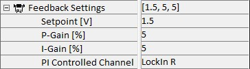

|
反馈设置
|
反馈设置允许访问与扫描台 Z 轴的 PI 控制结合使用的参数。
更多信息（操作指南）：

设点值 [V]
设点值电压可以在 -10V 到 +10V 之间调节，并与 PI 控制通道（见下文）测量的电压进行比较。
P 增益 [%]
此参数允许将 PI 控制器的比例增益从 0 % 增加到 100 %。可能需要调整此值以避免由于悬臂梁的固有频率或样品引起的振荡。
I 增益 [%]
此参数允许将 PI 控制器的积分增益从 0 % 增加到 100 %。可能需要调整此值以避免由于悬臂梁的固有频率或样品引起的振荡。
PI 控制通道
使用此参数，可以选择与设点值进行比较的通道。以下选项可供选择：
顶-底
此信号是四象限二极管上半部分和下半部分接收的电信号之间的差值。这是 AFM 和 SNOM 接触测量的典型设置。
锁相 R
锁相 R 是通过锁相放大器记录的振幅。如果测量模式是 AFM AC，通常选择此通道。
Fmax
在此选择中，从 DPFM 脉冲力曲线的峰值确定的最大力用作控制变量。
关
不使用通道作为输入，PI 控制器关闭。
Aux1
从 Aux1 输入读取的信号用作控制变量。
Aux2
从 Aux2 输入读取的信号用作控制变量。
Z 传感器
使用此信号，扫描台 Z 方向的电容传感器被用作输入，系统然后作为扫描台 Z 位置的有源反馈控制器。
反相
此变量允许反转控制偏差信号。这是因为在 AFM 接触模式中，如果信号太高，扫描台应回缩，而在 AFM AC 模式中则应向上移动。
HV 放大器激活
在 AFM 测量过程中，悬臂梁弯曲的调节可以通过两种不同的方式实现。要么使用扫描台的 Z 轴，要么使用带有压电定位元件的悬臂梁臂。如果使用这种悬臂梁臂，则需要向压电提供高压信号。因此，可以激活 HV 放大器（设置为是）或不激活（设置为否）。信号然后自动放大并导向相应的硬件。
如果使用带有定位元件的悬臂梁进行调节，扫描台的形貌读数将不会显示形貌，因为在这些测量期间台的 Z 位置将保持恒定。相反，记录的反馈信号可用于从中导出形貌。
输出限幅激活
此参数通常设置为"是"以保护扫描台的控制卡。这是必要的，因为 alphaControl 的输出为 ±10V，超出了扫描台控制卡的最大范围。
输出限幅范围
此处输入一个乘法因子（通常为 0.65），如果乘以 alphaControl 的电压输出范围（20V），则得到扫描台控制卡的正确范围（13V）。最小值和最大值分别为 0 和 1。
输出限幅偏移
可以输入信号偏移的乘法因子（范围从 -1 到 +1）作为输出限幅偏移。将此因子乘以控制器的正电压范围（+10V）得到扫描台电子设备所需的偏移。